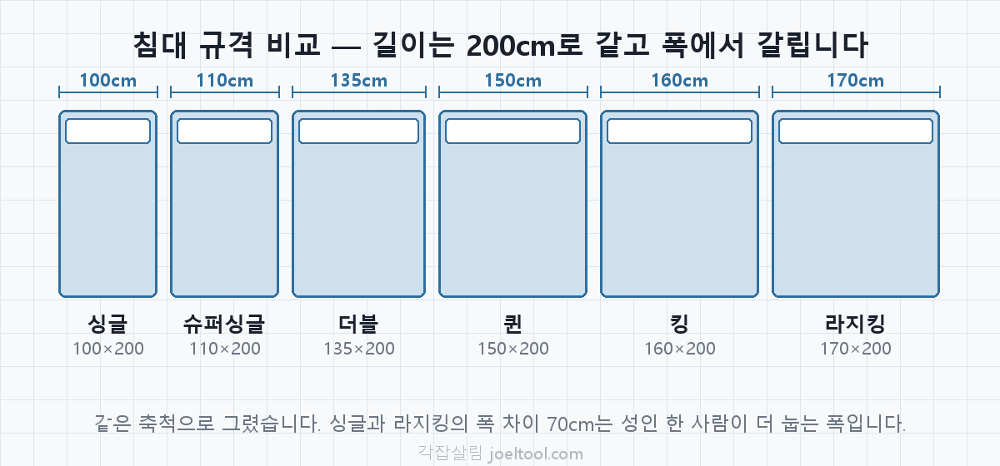
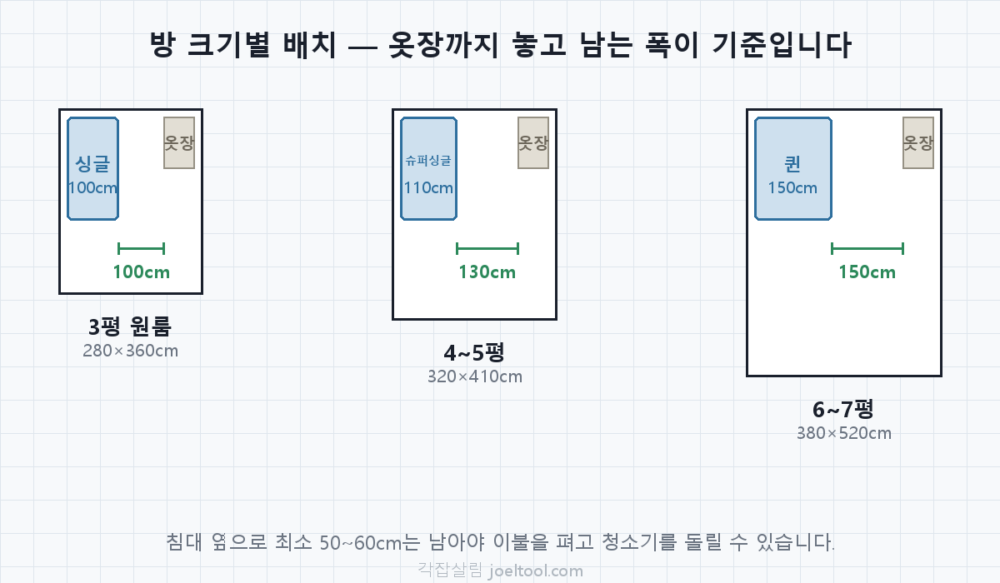
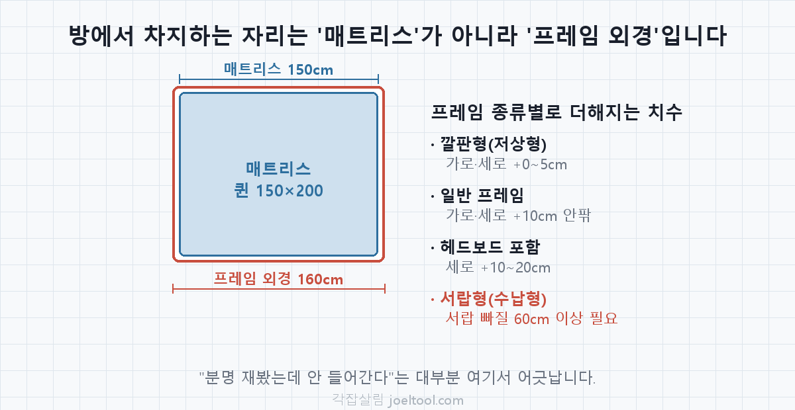

침대 사이즈 총정리 — 퀸 150×200, 킹 160×200 규격 한눈에
침대는 방에서 가장 큰 면적을 차지하는 가구입니다. 사이즈를 잘못 고르면 책상이나 옷장을 놓을 자리가 사라지고, 이미 들여놓은 뒤에는 되돌리기도 어렵습니다. 이 글은 국내에서 통용되는 침대 규격을 cm·mm·자 단위로 함께 정리하고, 방 크기별로 어떤 사이즈가 맞는지, 그리고 상세페이지 숫자만 보고 샀다가 흔히 겪는 함정까지 짚습니다.
한눈에 보는 침대 규격표
아래는 국내 가구 시장에서 일반적으로 통용되는 매트리스 규격입니다. 길이는 대부분 2000mm(200cm)로 같고, 폭에서 등급이 갈립니다.
| 구분 | 가로×세로 (mm) | cm | 자(尺) | 추천 방 크기 |
|---|---|---|---|---|
| 싱글 (S) | 1000×2000 | 100×200 | 약 3.3자 | 3평 이하 원룸, 아이 방 |
| 슈퍼싱글 (SS) | 1100×2000 | 110×200 | 약 3.6자 | 4~5평 원룸 — 1인 가구 최다 선택 |
| 더블 (D) | 1350×2000 | 135×200 | 약 4.5자 | 5~6평, 1인이 넓게 또는 2인 최소 |
| 퀸 (Q) | 1500×2000 | 150×200 | 약 5자 | 6평 이상, 2인 사용 표준 |
| 킹 (K) | 1600×2000 | 160×200 | 약 5.3자 | 8평 이상 넓은 방 |
| 라지킹 (LK) | 1700×2000 | 170×200 | 약 5.6자 | 10평 이상 안방 |

※ 1자 ≈ 30.3cm. 오래된 가구점이나 이불 가게에서는 아직 자 단위를 쓰는 곳이 있어 함께 적었습니다. 제조사·모델에 따라 ±수 cm 차이가 납니다. 아래 "프레임" 항목을 반드시 확인하세요.
⚠️ 국내 "킹"과 미국 "King"은 다릅니다
해외 직구나 외국 브랜드 매트리스를 볼 때 가장 많이 겪는 혼동입니다. 이름은 같은데 실제 치수가 다릅니다.
| 명칭 | 국내 통용 | 미국 규격 |
|---|---|---|
| Queen | 150×200cm | 약 152×203cm |
| King | 160×200cm | 약 193×203cm (이스턴킹) |
국내 킹(160cm)과 미국 King(193cm)은 폭이 33cm나 차이납니다. 미국 King은 국내 기준으로는 라지킹보다도 넓어서, 안방이 어지간히 넓지 않으면 들어가지 않습니다. 또한 길이가 203cm라 국내산 침대 프레임에 안 맞고, 침구도 국내 규격 제품을 쓸 수 없습니다. 해외 제품을 고려 중이라면 이름이 아니라 cm 숫자를 확인하세요.
방 크기별로 고르는 기준
평수만으로 정하면 실패하기 쉽습니다. 실제로는 침대를 놓고 남는 통로가 생활 편의를 결정합니다. 침대 옆으로 최소 50~60cm는 남아야 이불을 펴고 청소기를 돌릴 수 있습니다.
| 방 크기 | 무난한 선택 | 가능하지만 빠듯 | 피하는 게 나은 것 |
|---|---|---|---|
| 3평 (약 10㎡) | 싱글 | 슈퍼싱글 | 더블 이상 |
| 4~5평 (13~16㎡) | 슈퍼싱글 | 더블 | 퀸 이상 |
| 6~7평 (20~23㎡) | 더블·퀸 | 킹 | 라지킹 |
| 8평 이상 (26㎡~) | 퀸·킹 | 라지킹 | — |

원룸·자취방이라면 슈퍼싱글이 무난합니다
1인 가구에서 가장 많이 선택되는 사이즈입니다. 싱글보다 10cm 여유가 있어 뒤척이기 편하면서도, 퀸만큼 방을 잡아먹지 않아 책상과 수납장을 놓을 자리가 남습니다.
슈퍼싱글 → 퀸, 40cm의 무게
폭이 110cm에서 150cm로 40cm 늘어납니다. 숫자만 보면 작아 보이지만, 원룸에서 40cm는 책상 하나가 들어가느냐 마느냐를 가르는 폭입니다. 6평 원룸에 퀸을 놓으면 침대 옆 통로가 60cm 아래로 내려가는 경우가 많고, 여기에 책상까지 놓으면 옆으로 게걸음을 해야 지나갈 수 있습니다.
혼자 쓰면서 넓게 자고 싶다면 퀸보다 슈퍼싱글 + 남는 공간 활용이 만족도가 높은 편입니다. 반대로 둘이 함께 잔다면 퀸이 사실상 최소입니다. 슈퍼싱글(110cm)을 둘이 쓰면 1인당 55cm로, 성인 어깨 폭을 겨우 넘는 수준이라 잠자리가 불편합니다.
가장 흔한 함정 — 프레임은 매트리스보다 큽니다
위 표는 전부 매트리스 규격입니다. 방에서 실제로 차지하는 자리는 프레임 외경 기준이라 더 큽니다. 여기서 계산이 어긋나 "분명 재봤는데 안 들어간다"는 일이 생깁니다.
| 프레임 종류 | 추가되는 치수 | 비고 |
|---|---|---|
| 깔판형(저상형) | 가로·세로 +0~5cm | 좁은 방에 가장 유리 |
| 일반 프레임 | 가로·세로 +10cm 안팎 | 테두리 두께만큼 |
| 헤드보드 포함 | 세로 +10~20cm | 수납 헤드보드는 더 깊음 |
| 서랍형(수납형) | 겉치수는 일반과 비슷 | 서랍이 빠져나올 60cm 이상이 옆·앞에 필요 |

특히 서랍형은 겉으로는 공간을 안 잡아먹는 것처럼 보이지만, 서랍 앞에 60cm를 못 비우면 수납 기능 자체를 못 씁니다. 벽에 붙여 놓을 계획이라면 서랍이 어느 방향으로 열리는지 먼저 확인하세요.
상세페이지의 "퀸 사이즈"라는 이름만 믿지 말고 제품별 실제 외경 치수를 확인하는 게 안전합니다. 같은 퀸이어도 제품마다 10cm 이상 차이가 납니다.
침구(이불·시트) 사이즈 맞추기
매트리스를 정하면 침구도 따라옵니다. 침구는 매트리스보다 넉넉해야 늘어뜨려집니다.
| 매트리스 | 이불 커버 | 매트리스 커버(시트) |
|---|---|---|
| 싱글 100cm | 싱글 (약 150×210) | 100×200 + 두께 |
| 슈퍼싱글 110cm | 싱글~더블 | 110×200 + 두께 |
| 퀸 150cm | 퀸 (약 200×230) | 150×200 + 두께 |
| 킹 160cm | 킹 (약 220×230) | 160×200 + 두께 |
시트를 살 때는 매트리스 두께도 확인해야 합니다. 요즘 매트리스는 20~30cm가 흔한데, 두께 표기가 없는 시트는 대개 20cm 기준이라 두꺼운 매트리스에는 모서리가 들뜹니다. 제품 설명의 "수용 두께"를 보세요.
사기 전 마지막 체크리스트
- 통로 — 침대 옆에 50~60cm가 남는가
- 문·창문 — 문이 열리는 반경, 창문 여닫는 데 걸리지 않는가
- 반입 경로 — 현관문·복도·엘리베이터를 통과하는가(퀸 이상은 매트리스가 안 접히면 못 들어가는 집이 있습니다)
- 높이 — 매트리스 두께까지 더한 높이가 창틀·콘센트를 가리지 않는가
- 프레임 외경 — 매트리스 치수가 아니라 제품 외경으로 다시 계산했는가
자주 묻는 질문
슈퍼싱글과 싱글, 10cm 차이가 체감되나요?
혼자 자는 기준으로는 체감이 큰 편입니다. 성인 어깨 폭이 보통 40~45cm라, 100cm에서는 뒤척일 때 가장자리에 닿지만 110cm에서는 여유가 생깁니다. 방이 허락한다면 슈퍼싱글이 무난합니다.
둘이 자는데 더블이면 부족한가요?
더블(135cm)은 1인당 67cm입니다. 잘 수는 있지만 뒤척임이 그대로 전달됩니다. 장기적으로 함께 쓴다면 퀸(150cm, 1인당 75cm)부터가 편합니다.
침대 길이는 다 200cm인가요?
국내 제품은 대부분 200cm입니다. 키가 185cm를 넘는다면 발이 닿을 수 있어 길이 210cm 제품이나 수입 규격(203cm)을 확인해보세요.
원룸에 퀸을 꼭 놓고 싶다면?
가능은 하지만 책상을 포기하거나, 침대를 벽 두 면에 붙이고 나머지 가구를 벽걸이·수납형으로 바꿔야 합니다. 배치가 되는지 먼저 확인해보고 결정하는 편이 안전합니다.
매트리스만 바닥에 놓아도 되나요?
공간은 가장 아낄 수 있지만 바닥과 매트리스 사이에 습기가 차 곰팡이가 생기기 쉽습니다. 최소한 깔판(저상형 프레임)을 쓰는 편을 권합니다.
직접 배치해보고 정하세요
위 규격은 방 가구 배치 시뮬레이터에 프리셋으로 등록돼 있습니다. 평수와 방 모양을 고르고 침대를 눌러 넣으면 통로 폭이 충분한지 실시간으로 알려드립니다. 사이즈를 직접 재지 않아도 되고, 책상·옷장까지 같이 놓아보면서 비교할 수 있습니다.
함께 읽기: 원룸 침대 배치 — 어디에 놓을까 · 가구 사이 통로 폭 가이드 · 이사 전 가구 배치 체크리스트
※ 이 글의 치수는 국내에서 통용되는 일반 규격이며, 제조사·모델에 따라 ±수 cm 오차가 있을 수 있습니다. 구매 전 해당 제품의 상세 치수를 확인하세요.